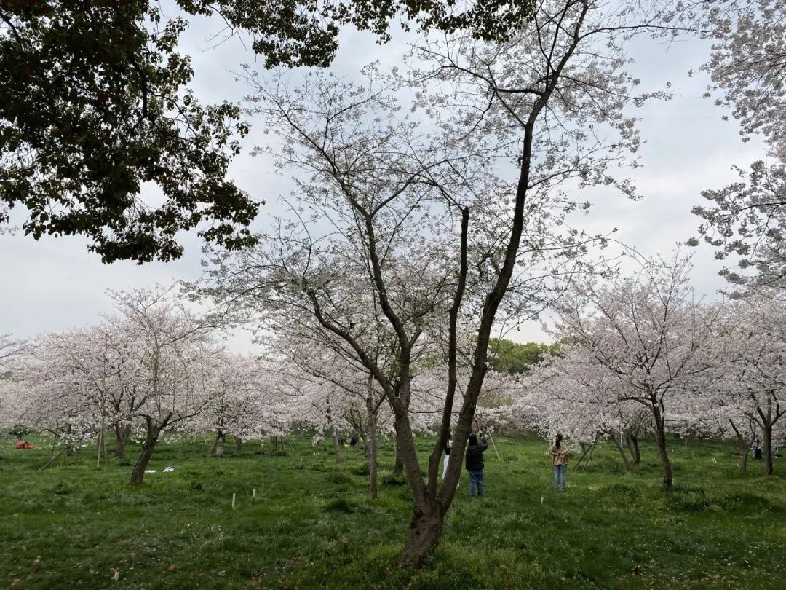
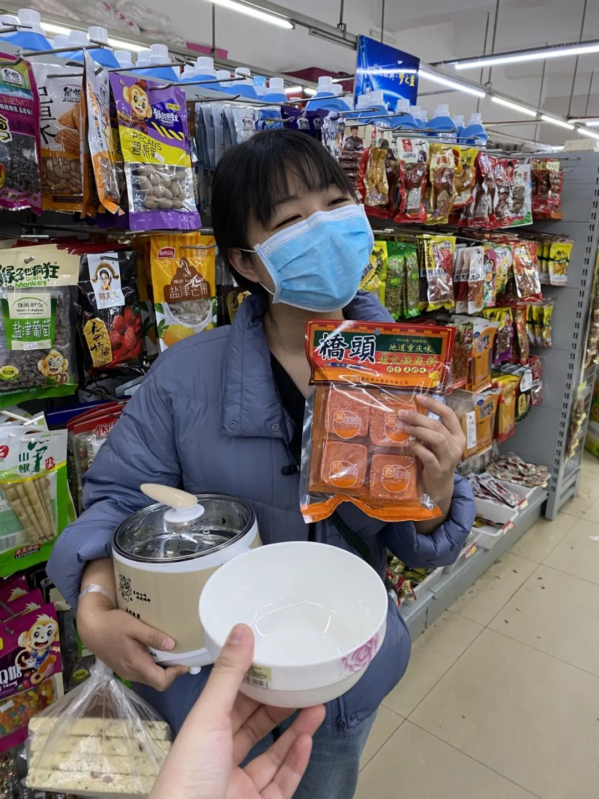
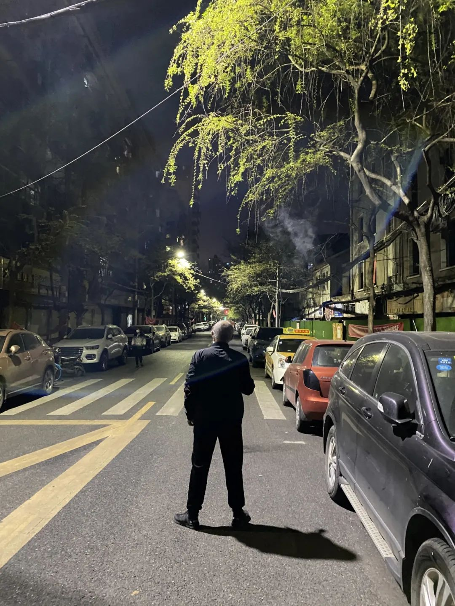
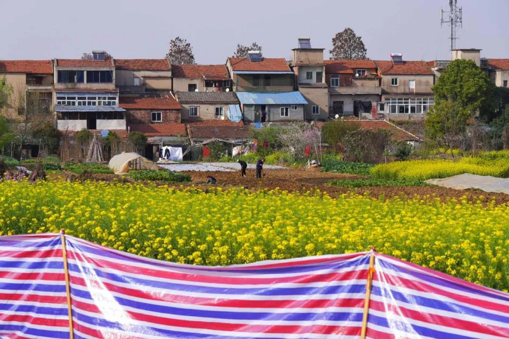
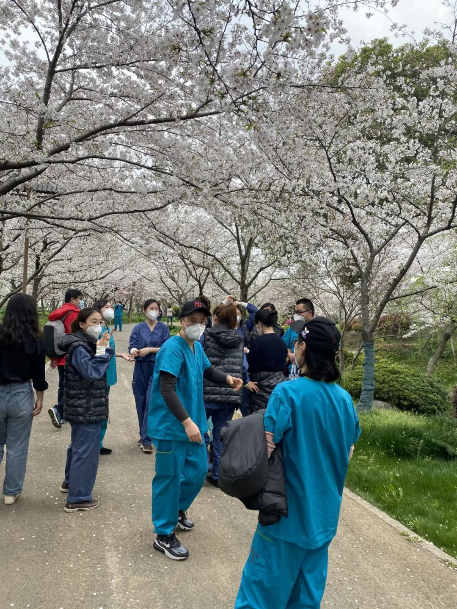

武汉大爷：我只要草纸，就别捆绑卫生巾了吧
原文链接 备份链接 武汉嫂子“汉骂”视频 “汉骂”嫂子和作家方方 数日前，一段微信语音在网上“一骂而红”，名叫“@雨儿”的业主在她所在的小区群里，用中气十足的武汉方言痛斥社区和中百超市推出“阴阳套餐”，社区推卸责任、置若罔闻。 “我们买一 …
无数文字记录下国人在近两百年的苦难，个人命运永远拗不过外部力量，传统文化塑造了坚韧又沉默的人格。自然灾害也好，时代洪流也好，人总是要活下去，把生活过下去
本文首发于南方人物周刊
文、图 | 本刊记者 杨楠 发自武汉
编辑 | 孙凌宇
全文约2807，细读大约需要7分钟

东湖樱花园里的樱花都开了，随着城市的逐步解封，武汉人将看到他们熟悉的花树
变化从声音开始。我听到酒店窗外出现了断断续续的嗡嗡声，那是机动车的声音，路面上车多了起来。两周前，金银潭医院（点击阅读《重组金银潭》）里多了许多鸟鸣，长嘤短呖，还有“布谷 布谷”的春日欢叫。树枝上腾空跃起一群鸟，穿林而过，留下簌簌的打叶声。
上周三和萝卜在老城区瞎逛。暮色渐沉，小区里的炒货店亮起灯，敞开门。我站在穿着睡衣的居民身边，说想吃红薯干。老板说，软的硬的、长条的切片的都有。“这个好吃的，”她推荐我小米糕和白米酥。我说你们可以开门做生意啦，她们不好意思笑笑说，没有，就趁打扫卫生的时候开一会儿。

老城区的炒货店
小区外超市的铁皮卷帘门拉实了，傍晚后却总有三五个人等在门口，用力敲铁皮门。隔一会儿，卷帘门上拉三分之一，涌进去几个，钻出来几个。

慢慢开始营业的超市
我们钻进了超市，里面真明亮啊，瞬间有一种被物质填满的朴素快乐。萝卜冲去买了一个锅，要我给她和锅拍张照。一张不满意要再来一张，一定要拍出她的快乐。那天盒马外送的备货也充足起来，我们在上面买了很多菜，又在超市里买到了桥头牌火锅底料。

萝卜和她新买的锅
拎着塑料袋走在路上，有散步的居民问我们“哪里开门了”，我们指一指那个看似沉默的铁皮卷帘门，说在门口等一等，可以放一点人进去。居民高兴地小跑过去，萝卜说高兴得好像过年一样。小区门口零零星星走出了居民，一位大爷摘下口罩，吸口烟，细密的早柳枝条下升腾起一大朵烟雾，自在地散开。

小区门口摘下口罩抽烟的大爷
我们走到民主一街，萝卜拿手机放《汉阳门花园》。我说大姐，你能不能不要在我耳边用外放，我在远处能听见。她说不行，你一定要听，很好听。
过了两天我去找这首歌的原创作者冯翔玩，坐在小区里晒太阳。他说你们去错了，我唱的是民主路，在汉阳门长江大桥那儿。他曾经是六角亭的一名医生，他的同学们许多都在疫情一线。我们聊了一会儿人间伤心事，他说到点了，得回家做饭了。
有天我在路上突然听到“刺啦”一声，是把菜扔进油锅的声音，然后锅铲和铁锅碰撞得叮当响，接着就闻到重油的香气。突然觉得很感动。
到武汉后，非采访时间我只哭过一次，哭了三个小时，哭得震天响地，哭得楼下同事问我怎么了。
那是到达武汉十几天的时候，采访不是很顺利，对方不坦诚。结束太晚，饥肠辘辘却没有地方可以买到吃的。车驶过长江大桥，空旷安静。店铺黑灯瞎火，这不是个能够正常运转的城市。我想到晨起看到的新闻，三地监狱多人感染。司机师傅一直在说接送医护人员的故事，说他们上车就睡着了，上车就哭。我感到压抑。整个城市都凝固了，宛若冰封，没有生气。高楼里一户户亮着灯，都是被关起来的武汉人。
才十几天，我还每天到处窜来窜去，和不同的人说话，都压抑得喘不过气。武汉人呢？他们封城这一个月怎么熬过来的。
但我没有过特别绝望的时候，没有被汹涌的暗潮淹没。即使我听了许多人间伤心事，可我回忆起讲述的人，他们或是尽忠职守，爱岗敬业；或是努力求生，使劲生活，即使他们都流过许多眼泪，经历了人生迄今为止最彻底的黑暗。我从他们身上得到了许多能量，就像我从炒菜的声音里，感知到市井生活给人的力气。

图/南方周末记者 翁洹
前几日跟康复的患者回家，看到业委会对他十分警惕。他的父母有些气愤，说左邻右舍戴了有色眼镜。又嘱咐我，一定要报道一下他们社区的问题，“根本就不管我们，就给我们发过苹果。”我走下楼，看到一位武汉嫂子，杵着一根山药在发脾气，也是说社区不作为。
我去社区办公室兜了一圈，社区书记不让我写、不让我拍照。但她一个劲儿和我说，说得眼泪直流。之所以每个小区能获得的捐赠物资不同，是因为有许多捐赠都是定向捐赠，她只能分给捐赠人指定的小区。每个小区能分到的只有苹果，为了苹果够分，社区工作人员把自家的苹果拿出来凑了数。她说你别写，我这么大年纪了，我什么都不要，但我尽力了。
前日，武汉市宣布无疫情小区——武汉无疫情小区占比已经接近90%——逐步恢复小区内人员活动和社区商业活动。
凭借绿色健康码，我去了长航医院对面的家乐福。排队登记的时候，前面的大爷急冲冲，被工作人员两度叫回。后面的阿姨说：“咳，这是关太久了。”
超市里人丁稀落。临近打烊，一排桃酥无人垂青，小喇叭喊着“新鲜的桃酥九块九”。我看不过去桃酥被冷落，买了一包。回去咬了几口，觉得不行，没有上海的桃酥好吃。我突然幻想起来，要是我感染进了病房咋办呢。我想我一定要积极配合治疗，要有强大的求生意志，一定要康复出院，回家吃我家门口的凯司令西点。

超市里的桃酥
巴恩斯在《生命的层级》里悼念亡妻，他说这悲痛不属于自己，而是洒向亡妻：“既然她已经失去了生命，就该寻根问底，看看她失去的到底是什么。她的肉体，她的灵魂，她对生命的强烈好奇。常常，我会有这样的错觉，仿佛生命本身才是最大的输家，它才真切地感受到丧亲之痛，因为它不再拥有她对生命本身的强烈好奇。”
我拎着购物袋去医生的驻地酒店找他们聊天，被门口保安叫住。他说你哪里买的，都买了啥。我掏出桃酥、比利时啤酒和一大瓶发膜，他羡慕不已，说啥时候才能理发啊。
有医生问我怎么进家乐福，我说凭借绿色的健康码。他们跃跃欲试，我说别试了，第一页就要你回答：是否在14天里接触过患者。
我的许多采访对象都是最早援鄂的医生，他们也会最晚离开。
前日惊雷大雨，武汉入春，郊区的农民开始耕地了。长江大桥的桥头满是黄色的七瓣小花。用手机软件识别了一下，那是“迎春花”。大桥上的行人多了起来，慢走散步，快走锻炼。有人把摩托停在路边发呆，有人打赤膊舒展筋骨，还有人悄悄摘了口罩用力吸了一口气。

郊区的农民开始耕地 图/南方周末记者 翁洹
滴滴司机们不似前日般，一上车就与我聊人间伤心事了。好几位向我介绍了武汉美丽的地方，劝我一定要去江边看夕阳；有一位已经拆了车内隔挡前座后座的帘子，说是太闷热了，“我每天消毒七八遍，开窗通风就好。”
我第一次在车上听到了音乐，我说真好听啊，师傅这是什么歌。“这是Beyond，叫《无悔这一生》，”师傅说。
东湖樱花园里的樱花都开了，随着城市的逐步解封，武汉人将看到他们熟悉的花树。樱花园现在只对医务人员开放，原本往返于驻地酒店和医院之间的通勤大巴有时会拉着医疗任务结束的医务人员来看花。姑娘们有的化了妆，还有穿裙子的，跳下车喊道，“这么多花啊，好美啊！”
我看到他们在樱花树下合影，真高兴啊。

在樱花树下合影的医务人员
昨天有个采访对象的妈妈出院了。离家三十四天，进门前她妈妈准备好了袋子准备收拾两只被遗留下，只有水没有猫粮的猫。
“结果一进去，听到了猫叫。虽然家里一团乱，但是两只猫还活着，我妈超开心。”她说。
读书时候，我的主修方向是中国现当代文学。无数文字记录下国人在近两百年的苦难，个人命运永远拗不过外部力量，传统文化塑造了坚韧又沉默的人格。自然灾害也好，时代洪流也好，人总是要活下去，把生活过下去。


中国人物类媒体的领导者
提供有格调、有智力的人物读本
记录我们的命运 · 为历史留存一份底稿

往期精选


点击“阅读原文”即可订阅和购买最新杂志
原文链接 备份链接 武汉嫂子“汉骂”视频 “汉骂”嫂子和作家方方 数日前，一段微信语音在网上“一骂而红”，名叫“@雨儿”的业主在她所在的小区群里，用中气十足的武汉方言痛斥社区和中百超市推出“阴阳套餐”，社区推卸责任、置若罔闻。 “我们买一 …
原文链接 备份链接 武汉嫂子“汉骂”视频 “汉骂”嫂子和作家方方 数日前，一段微信语音在网上“一骂而红”，名叫“@雨儿”的业主在她所在的小区群里，用中气十足的武汉方言痛斥社区和中百超市推出“阴阳套餐”，社区推卸责任、置若罔闻。 “我们买一 …
原文链接 备份链接 若干年后回望，这一定是一段值得铭记的日子。因为新冠肺炎疫情，许多家庭无法团圆。疫情数据地图的每次刷新都令人揪心。我们和千万武汉人在一起，这不只是一句安慰，因为没有人能够置身事外。 之前，我们向用户征集这段时间的故事， …
原文链接 备份链接 经历整整31天的艰难考验之后，武汉疫情防控已经从无序走向有序，但千万居民的生活从无序到有序才刚刚开始，这个疫情核心区的社会经济生活全面恢复，还面临很多挑战 2020年2月11日，武汉市洪山体育馆武昌方舱医院，社区工作人 …
原文链接 备份链接 转眼已是春分，我们还没来得及去感知，2020年的春天就快要走到尽头。 今年的春天注定会被我们记得。它会在以后的春天里，某个我们突然放松下来的时候，再次于脑海中闪回。 这一年春天我们没有走出家门，而是在封闭近两个月后，在 …